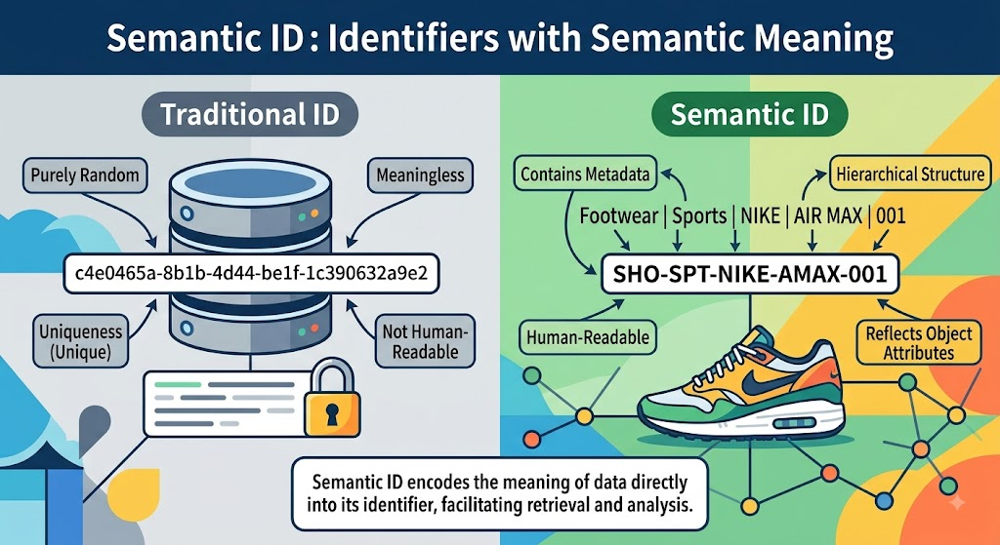

生成式推薦的基石：Semantic ID 如何破解海量商品 Token 化難題

在 從級聯漏斗到自迴歸生成：推薦系統的範式重塑 中，我們探討了推薦系統全面邁向生成式範式的必然趨勢。理論上，自迴歸生成（Autoregressive Generation）確實帶來了更強大的序列學習與表達能力；然而，理論上的優雅並不等同於落地時的順遂。在實際工程推進時，我們必然會遭遇一個核心的底層挑戰：如何將生成式架構套用到海量的商品上？畢竟，自然語言的詞彙空間（Vocabulary）是有限且相對封閉的，但推薦系統中的商品庫卻是無限擴展且高度動態的。這種本質上的差異，導致模型無法直接沿用理解自然語言的方式來理解與生成商品。如果無法讓大模型具備「理解並生成商品」的能力，再強大的自迴歸網路架構也無法發揮作用。
因此，本文將深度拆解生成式推薦系統中最核心的抽象介面——Semantic ID（語意識別碼）。我們將探討傳統商品 ID 體系為何會導致大模型運算癱瘓，Semantic ID 如何透過語意量化解決這個難題，以及在真實工業場景落地時，系統必須直面的解碼延遲與集內排序痛點。
前言與破題：生成式推薦的落地難題
在自然語言處理（NLP）領域，大語言模型在訓練前會預先定義一套詞表（Vocabulary），其候選 Token 數量通常落在 3 萬到 10 萬個之間（例如 GPT-4 的 Vocab Size 約為 10 萬）。模型在最後一層只需要從這些有限的選項中，計算並「預測」出下一個 Token 的機率分佈。
然而，在真實的商業推薦場景中，電商或內容平台上的候選商品（Items）數量動輒高達千萬、甚至數億。如果依照過去的直覺，直接把每個商品當作一個獨立的 Token（即傳統的 Atomic ID）丟給模型訓練，會發生什麼事？
系統會立刻撞上兩道無法逾越的工程高牆：
-
Softmax 算力與記憶體爆炸：
自迴歸模型在預測下一個 Token 時，需要在網路的最後一層對所有潛在的商品 ID 進行 Softmax 運算。當詞表大小（Vocab Size）達到 $10^7$ 的數量級時，這個極度龐大的矩陣乘法將會消耗驚人的 GPU 記憶體與算力頻寬。這不僅會導致運算過程出現嚴重的數值不穩定，模型也根本無法在要求 50 毫秒響應的線上環境中完成推論。
-
商品頻繁上下架與冷啟動絕壁：
語言模型的詞表相對靜態，模型訓練收斂後就能持續泛化使用。但推薦系統的商品庫每天都在劇烈變動，若要為了新上架的商品頻繁地重新訓練模型或更新 Output Layer，在實務上極度耗時且不切實際。
更致命的是，傳統的 Atomic ID 本質上僅是用來在 Embedding Table 中尋找對應向量的查表鍵（Lookup Key），其本身不具備任何物理與語意意義。 例如 Item
10023與 Item10024在系統中只是兩個獨立的流水號，無法反映出它們可能是同款不同色的 3C 產品。因此，當新商品上架時，由於缺乏歷史互動數據，且這把「新鑰匙」與其他既有 ID 之間毫無特徵關聯，模型完全沒有任何線索去預測這個新商品，導致嚴重的冷啟動失敗。
這意味著我們無法再將大模型硬塞進傳統的 ID 體系，而是需要一套全新的商品表徵與編碼方式。而業界目前普遍採用的破局關鍵，正是 Semantic ID（語意 ID）。
破局之道：從「無意義流水號」到「語意序列」的 Semantic ID
要理解 Semantic ID 的運作機制，我們可以先回顧人類處理龐大資訊的分類邏輯。
面對海量且複雜的實體，人類從不為每個物件單獨編造無意義的隨機代碼，而是習慣將資訊進行「階層化」與「結構化」的梳理。
例如在自然界中，面對數百萬種生物，我們不會為每種生物憑空編造獨立的隨機代碼，而是透過「界 $\to$ 門 $\to$ 綱 $\to$ 目 $\to$ 科 $\to$ 屬 $\to$ 種」的階層分類，精確定位並理解每個物種之間的親緣關係；同樣地，在日常生活中，面對全國千萬棟建築，我們也不會給每棟房子發放獨立的流水號，而是發明了「郵遞區號」——透過「縣市 $\to$ 鄉鎮區 $\to$ 街道」的階層數字疊加，快速定位任何地址。
這些機制的共同核心，在於「從粗粒度到細粒度（Coarse-to-Fine）」的階層化結構——編碼本身不再是冷冰冰的流水號，而是蘊含了豐富的語意資訊。
而 Semantic ID 的核心直覺，正是將這種階層化邏輯搬進推薦系統中：既然要用大模型做推薦，為何不讓商品也變成一種「由基礎語意疊加而成的語言」？
為了實現這個目標，Semantic ID 徹底拋棄了傳統「單一商品對應單一隨機整數」的舊思維，改以「階層化序列」來重新定義一個商品。
然而，要實現「從粗到細」的階層式表示，前提是系統必須先精準掌握該商品的各種特徵與屬性——唯有先「讀懂」商品的基礎語意，後續的層層分類與編碼才有據可依。因此，在實務工程中，這個轉換過程通常分為兩個緊密相連的步驟：
- 多模態特徵萃取（從實體到語意）： 首先，利用預訓練模型將商品的文本標題、描述、甚至是圖片與影音內容，投影到一個高維空間，萃取成一個蘊含豐富語意資訊的連續特徵向量（Dense Embedding）。
- 階層式語意量化（從連續到離散）： 有了代表商品語意的連續向量後，接著透過特定的 Tokenizer 演算法，將這個向量「翻譯」成大模型看得懂的離散 Token 序列：
$$\text{Item } x \longrightarrow [c_1, c_2, \dots, c_M]$$
這串長度為 $M$ 的序列繼承了原始 Embedding 的資訊，並以類似「郵遞區號」的階層結構展開。以實務上常見的 $M=3$ 為例，這 3 個 Token 通常代表由粗到細的特徵逼近：
- 第一層 $c_1$（粗粒度語意）： 代表最廣泛的商品大類別。例如，第一個 Token 決定了這是「3C 電子產品」。
- 第二層 $c_2$（中粒度特徵）： 在大類別下進一步限縮範圍。第二個 Token 可能鎖定了「筆記型電腦」及特定的「品牌或風格」。
- 第三層 $c_3$（細粒度屬性）： 修飾更細節的規格特徵。第三個 Token 可能代表了「高階輕薄、M3 晶片」。
理解這個映射過程後，傳統 Atomic ID 與 Semantic ID 的本質差異便一目瞭然：前者只是系統隨機分配、純粹用來查表的獨立 Lookup Key；而後者是從「有意義的 Embedding」中孕育而生的結構化特徵。
正是因為 Semantic ID 源自語意，它的每一個 Token 從設計之初就是「自帶特徵的積木」。它們不再是孤立無援的代碼，而是像自然語言中的詞彙一樣，透過層層疊加來精準「描述」商品——這也正是 Semantic ID 能被稱為「商品語言」的真正核心所在。
Semantic ID 帶來的顛覆性優勢
將商品轉化為 Token 序列後，我們不僅完美破解了前面的兩大工程高牆，還獲得了生成式架構獨有的紅利：
-
碼本複用與極致的空間壓縮：
假設每一層的詞表大小（即碼本容量 Codebook Size）設定為 $K=256$，對於一個 3 層的 Semantic ID，大模型最後一層需要面對的 Vocab Size 會被極致壓縮到僅剩 $3 \times 256 = 768$。這徹底消滅了千萬級 Softmax 帶來的 OOM 與算力危機。然而，這區區 768 個基礎語意詞彙，透過排列組合卻能撐起 $256^3 \approx 1,677$ 萬種獨一無二的編碼空間，輕鬆覆蓋龐大的商品庫。
-
自然泛化與零樣本 (Zero-Shot) 冷啟動：
這是解決商品頻繁上下架問題的關鍵機制。當新商品上架時，只需走一遍「特徵萃取 $\to$ 語意量化」流程，就能直接賦予它一組 Semantic ID。因為這組 ID 是由既有的「語意積木」拼湊而成，大模型在過往的自迴歸訓練中早已掌握這些 Token 代表的用戶偏好。因此，即便該商品毫無歷史互動數據，模型依然能憑藉這串熟悉的語意序列，精準地將其推薦給合適的受眾。
-
階層容錯與前綴包容性 (Prefix Tolerance)：
在 Atomic ID 體系下，模型只要預測錯一個數字，推薦結果可能就會從「筆記型電腦」變成毫不相干的「洋裝」。但 Semantic ID 具備類似郵遞區號的「前綴包容性」：即便模型在自迴歸生成的最後一步（最細微的 $c_3$）產生偏差，只要前兩個 Token ($c_1, c_2$) 正確，系統推薦出來的依然是一台「同品牌筆記型電腦」，頂多只是顏色或記憶體規格不同。這大幅提升了線上系統的容錯率與推薦合理性。
思想實驗：Semantic ID 的量化演進之路
既然我們確定了商品必須被表示為多個 Token 的「語意序列」，下一個隨之而來的疑問是：這套 Token 序列究竟是如何被量化設計出來的？我們能不能直接使用傳統的量化演算法？
為了理解 Semantic ID 最終形態的由來，我們可以進行一場簡單的「思想實驗」，看看量化技術是如何一路演進的：
嘗試一：單一 K-means 聚類
最直覺的想法是：既然幾億個商品 ID 太多，我們直接用 K-Means 聚類 把商品聚編成 8192 個群，將聚類中心的 ID（0 到 8191）當作商品的單一 Token 不就好了嗎？

這個想法立刻會陷入兩難的死胡同：
- 若 $K$ 值太小（如 $K=8192$）： 雖然將 Vocab Size 壓縮到了大模型可承受的範圍，但量化誤差（Distortion）極度驚人。成千上萬個細節截然不同的商品會被強行併入同一個 ID，模型根本無法區分商品差異。
- 若 $K$ 值極大（如 $K=100\text{萬}$）： 雖然保留了商品細節，但詞表空間與 Softmax 計算再次爆炸，退回了 Atomic ID 的老路。
嘗試二：乘積量化 Product Quantization (PQ)
為了打破單一 Token 的限制，乘積量化（PQ）提出了一種「分而治之」的組合思路：將一個 256 維的商品向量拆分成 4 段獨立的 64 維子空間，每段子空間各自訓練一個小碼本（$K=256$）。

這樣僅需極小的儲存（$4 \times 256$ 個中心點），就能組合表達 $256^4 \approx 43$ 億種商品，大幅提升了表達容量。然而，PQ 存在一個致命缺陷：子空間的切分是平行且獨立的，各段 ID 地位對等，完全無法提供大模型所需的「由粗到細 (Coarse-to-fine)」階層語意結構。
終極解答：殘差量化 Residual Quantization (RQ)
為了同時兼顧「小詞表組合」與「階層語意」，技術最終演進出了殘差量化（Residual Quantization, RQ）： 不切分向量空間，而是保留完整的全局向量，改採「逐層逼近、遞減殘差」的策略——第一層 Token 鎖定商品宏觀大類，後續 Token 則針對上一層遺留的「幾何殘差」進行量化微調。
這種機制讓 Token 序列天然成長為一棵「由粗到細」的語意樹，成為了 Semantic ID 最完美的底層依託。
如何生成 Semantic ID？兩大 Tokenizer 技術路線
既然 Semantic ID 優勢顯著，下一個核心問題是：如何把「商品連續 Embedding」實際轉換成這套帶有階層語意的「離散 Token 碼本」？
在自然語言處理中，負責將字詞轉化為模型 Token 的元件被稱為 Tokenizer（分詞器）。同樣地，在生成式推薦系統中，負責將商品 Embedding 轉換成離散 Token 序列的元件，也被稱作「商品 Tokenizer」。
目前業界打造商品 Tokenizer 的技術路線，主要分為兩大陣營：
-
端到端神經網路路線 (RQ-VAE)：
以 Google TIGER (NeurIPS 2022) 為代表。透過變分自編碼器（Encoder、Codebooks、Decoder）與 Straight-Through Estimator (STE) 梯度技巧，讓神經網路主動學習符合「下游推薦任務」的潛在語意空間。這條路線能將推薦效果推向極致（SOTA），但訓練成本與調參難度較高。若想更深入了解其背後的細節，我在 端到端離散化與生成式檢索：RQ-VAE 如何打造 Semantic ID Tokenizer 中有更完整的紀錄。
-
兩階段幾何量化路線 (RQ-Kmeans)：
以快手 OneRec (2024) 等前沿實踐為代表。先複用既有模型（如雙塔 DSSM）產生高品質的靜態商品 Embedding，再經由純粹的幾何殘差 K-means 聚類切分成 Token 序列。這條路線避開了複雜的梯度優化問題，工程穩定性與 CP 值極高。若想更深入了解其背後的細節，我在 從幾何量化到生成式推薦：演進之路與 RQ-Kmeans 的 Semantic ID 實踐 中有更完整的紀錄。

實務挑戰與工程權衡：SID 的深層痛點
儘管 Tokenizer 能將商品轉化為優雅的 Semantic ID，但在真實工業環境的線上系統落地時，工程團隊依然需要面對幾個棘手的現實挑戰與架構妥協：
痛點一：無效 SID 生成與幻覺
大模型是基於機率分佈進行自迴歸生成的。這意味著模型在推論時極有可能發生「幻覺」，並組合出一串在真實商品庫中根本不存在的 Semantic ID（例如模型合理地推導出一個「蘋果牌微波爐」的 Token 序列，但現實中沒有這個實體商品）。
因此，為防止系統推薦出空集合，推論階段必須引入 約束解碼 (Constrained Decoding)。實務上通常會預先構建一棵龐大的 Trie Tree（字典樹）來儲存所有合法的商品 Token 序列。在模型生成每一步 Token 時，動態比對字典樹並利用 遮罩（Mask） 過濾掉不合法的選項，強制限制模型只能在「真實存在的商品路徑」中進行搜尋與生成。
痛點二：自迴歸解碼延遲
傳統推薦模型只需一次 前向傳播（Forward Pass） 就能給所有候選商品打分。但生成式模型每推薦一個商品，必須依次等待 $M$ 次的自迴歸解碼。
如果 Token 序列長度 $M$ 設得太長，序列生成的延遲時間將呈線性甚至倍數增加，這在嚴格要求響應速度的線上系統中是非常致命的。因此，我們不能無限制地增加 Semantic ID 的層數，必須在「語意描述的精細度」與「線上解碼耗時」之間取得嚴格的平衡。
痛點三：ID 碰撞 (Collision) 與集內排序難題
為控制上述的解碼延遲，實務上常將 Semantic ID 限制在 3 層以內。但將高維的連續向量強制進行離散語意量化，必然會帶來一定程度的資訊遺失。這會導致一個直接的後果：多個極度相似的商品（如同款不同色的服飾、規格極近的配件）被映射到完全相同的 Semantic ID，這就是所謂的「ID 碰撞」。
此時，當模型預測出這組 Semantic ID 時，實際上是召回了一個「候選商品集合」。真正的難題在於：模型很難單靠這組 SID 的生成機率，去決定集合內部幾十個同質商品的優先展現順序。
為了解決這個問題，業界發展出了兩種實用的工程折衷方案：
- 方案 A：引入輕量級 Ranker。 維持純粹的 3 層 Semantic ID 作為大模型的生成目標，當召回一個商品集後，將最後一哩路的「集內排序」交由下游輕量級的排序器（Ranker）或商業邏輯來處理。
- 方案 B：「3 個語意 Token + 1 個 Product ID (PID) Token」的混合結構。 前 3 個 Token 確保語意泛化與大範圍鎖定，最後 1 個 Token 則放棄語意，直接對應傳統的實體 PID，藉此由模型親自精確區分碰撞的商品。
⚠️ 工程警告：方案 B 雖能解決終端精確度的問題，但若在解碼階段混用兩種截然不同的表徵邏輯（語意預測與精確 ID 檢索），會導致前述的「約束解碼」規則變得異常複雜，大幅增加系統維護的技術債。
結語：開啟大模型與推薦系統對話的橋樑
從孤立無意義的流水號，到充滿階層語意的 Token 序列，Semantic ID 不僅是工程架構上的優化，更是推薦系統跨入「生成式 AI 時代」的核心基礎。
它徹底打破了長久以來橫亙在自然語言大模型與海量商品庫之間的表徵鴻溝，讓推薦引擎也能像處理語言文字一樣，具備深度的邏輯推理與泛化生成能力。雖然前方仍有約束解碼、解碼延遲等工程挑戰需要克服，但隨著 Tokenizer 演算法與硬體推論基建的持續進化，這場屬於推薦系統底層架構的範式轉移，才正要揭開序幕。
Review Kit
QA Generator Prompt
You are given a set of notes or an article.
Read and understand the content, then generate approximately 20 questions.
Requested question type(s): ["mcq"]
Most questions should be drawn directly from the material, focusing on key concepts, definitions,
and core ideas, while a smaller portion can be creative or application-based,
extending the material into real-world or novel scenarios but staying conceptually grounded.
Include a mix of difficulty levels—beginner, intermediate, advanced, and professional.
For each question, provide the question number, type (conceptual, application, analytical),
difficulty, topic, the correct answer, and a brief explanation.
If the requested question format requires options (for example MCQ), include the necessary answer choices.
Focus on clarity, relevance, and meaningful application, avoiding trivial or overly obscure details.You are given a set of notes or an article.
Read and understand the content, then generate approximately 20 questions.
Requested question type(s): ["mcq"]
Most questions should be drawn directly from the material, focusing on key concepts, definitions,
and core ideas, while a smaller portion can be creative or application-based,
extending the material into real-world or novel scenarios but staying conceptually grounded.
Include a mix of difficulty levels—beginner, intermediate, advanced, and professional.
For each question, provide the question number, type (conceptual, application, analytical),
difficulty, topic, the correct answer, and a brief explanation.
If the requested question format requires options (for example MCQ), include the necessary answer choices.
Focus on clarity, relevance, and meaningful application, avoiding trivial or overly obscure details.